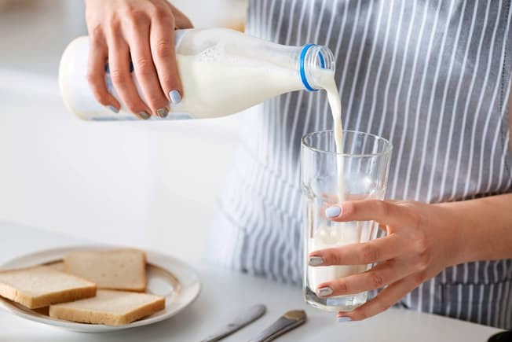
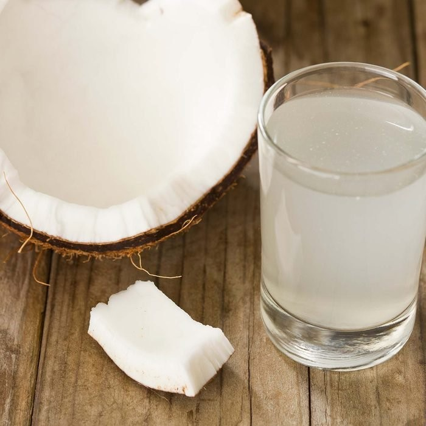

- Drinking Clean Water
- Best Choice: Filtered Coffee
- Best Choice: Tea
- Good Choice: Milk
- Green Tea
- Pomegranate Juice
- Beet Juice
- Lemon Water
- Kombucha
- Coconut Water
- Hot Chocolate
- Cranberry Juice
- Red Wine
- Orange Juice
Water is essential for your body. It prevents dehydration, constipation, and kidney stones. Plus, with no calories, it’s the best beverage for your waistline. If you add 1 to 3 cups of fewer calories per day. Too plain? Calorie-free flavor drops sweeten, but may have artificial flavors, colors, or preservatives. Try a squeeze of citrus instead.
againCoffee has gotten a bad rap before, but studies show it may protect st type 2 diabetes , liver disease, and lower your odds of heart disease. Three to five cups a day seems to be healthy, as long as you go easy on the cream and sugar. But if you’re pregnant or brew yours with a paper filter. It gets rid of a substance called cafestol that can raise LDL cholesterol.
It can also help improve cognitive function and helps lower the risk of death from all causes.Green, black, and other kinds are full of antioxidants, which may protect you against some types of cancer, stroke, heart disease, and high blood pressure. Plus, unsweetened brews are at home -- without the added sugars that bottled tea can have.
It’s a powerhouse of nutrients like calcium, vitamin D, and potassium, which keep your muscles , teeth, and bones healthy. And a cup of it has more protein than a large egg. To get more nutrition from fewer calories, look for low-fat and skim options. Some nondairy milks -- soy , oat, almond, and others -- have some of the same nutrients as cow’s milk, but the concentration of these is low per serving.
Green tea has been hailed for its health benefits in Asian countries for centuries only recently did Americans get the memo. While many know green tea as a healthy drink that hydrates and soothes the soul, this drink does even more good than you may know. types of cancer like breast cancer and prostate cancer. Studies suggest it can also help reduce sharp increases in blood sugar after a meal, which can be especially beneficial for people with type 2 diabetes. Give this warm and soothing lemon thyme green tea a try.
All-natural pomegranate juice is one of the most nutritious beverages on supermarket shelves. decrease inflammation, which may help relieve some types of arthritis. It’s also rich in immune-boosting vitamin C, making it one of our favorite healthy drinks to fight off colds. Learn more about the health benefits of pomegranate.
Need a few reasons why you should incorporate beets into your diet? Beets’ health , magnesium and nitrates. Our bodies convert nitrates into nitric oxide, which helps lower blood pressure and improve blood flow. Some studies suggest it’s a great food to eat before you workout to increase stamina. Grab a juicer and make this sweet healthy drink to go.
We recommend starting your day with lemon water. Lemon water is a surprisingly powerful immune booster. Just 2 tablespoons of lemon juice stirred into a glass of water adds 14mg it tastes better—one more way to help stay hydrated.
What is kombucha, anyway? This elixir is one of the hottest healthy drinks on the market. Wellness junkies rave about kombucha’s health benefits. Like other healthy fermented foods , fizzy kombucha is packed with probiotics that promote healthy bacteria in the gut. These bacteria aid in digestion and help your body absorb vitamins and minerals. Find out our favorite kombucha brand from our most recent taste test.
The flavor of this tropical water is a bit controversial. Some people love it, and some hate a surprising amount of potassium. Potassium plays an important role in maintaining a healthy heartbeat and regulating blood pressure. If you like carbonation, try this sparkling coconut water. (It’s one of our favorite healthy carbonated drinks.)
Who knew treats could be nutritious? We’ve all heard about the health benefits of cacao, but this antioxidant-rich drink is even more beneficial when mixed with milk, which is high in calcium and usually fortified with vitamin D. Find a new favorite hot chocolate recipe or try one of our favorite hot chocolate brands.
This tangy juice is packed with antioxidants that can help prevent cardiovascular disease and some types of cancer, and promotes a healthy urinary tract. Cranberry juice is tart on its own, so it’s combined with sugar or other, sweeter fruit juices. Look for varieties that are 100% juice so you’re taking in all of cranberries’ health benefits.
Thought red wine was only good for kicking back and relaxing? Think again. Studies suggest that moderate amounts of any alcohol can help increase HDL (good cholesterol) and prevent artery damage. Resveratrol is an antioxidant specifically found in red wine that might have even more health benefits like helping to decrease LDL (bad cholesterol) and prevent blood clots. Red wine may even improve your oral health, too! Try a glass a day or switch things up with a warming glass of mulled red wine.
Possibly the most ubiquitous juice on the market, fresh orange juice is one of the healthiest drinks you can grab. Everybody knows it’s a great source of vitamin C, but most people don’t know that this healthy drink is a good source of potassium and thiamin plus calcium and vitamin D if it’s fortified. If you find fizz refreshing, try it in an orange juice spritzer.